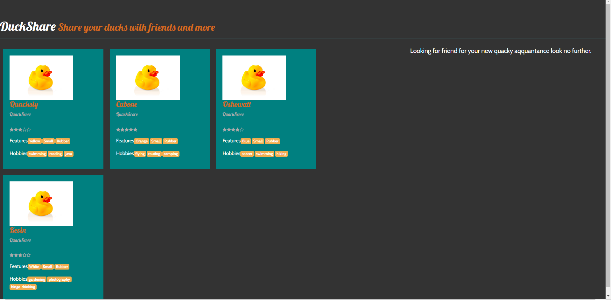
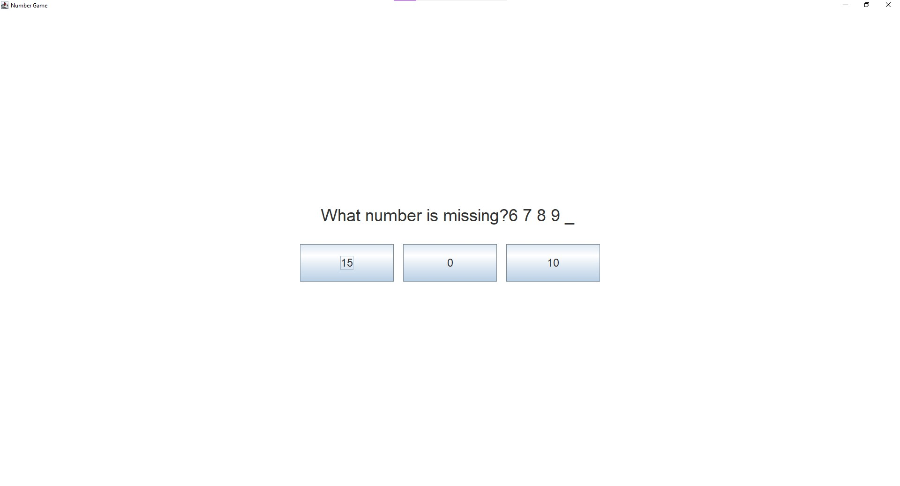

Projects
DuckShare
As part of my Web-Frameworks module in my third year of college, we are required to make a static site that can process live data. I decided to make a website that allows users to login/register so that they can post and review each other's rubber ducks. It is like a mix between Instagram and Pinterest for Ducks
Technologies Used: Pug, Javascript, CSS, MongoDB, Node.js, Express, Angular
GitHub Repo Groccery System
As part of my Software Engineering module in my second year of college, The grocery shopping system is a comprehensive platform that allows users to register and log in, search for products, add items to their cart, proceed to checkout, and cancel orders when necessary. It also offers customers the ability to edit their profiles and account details for a personalized shopping experience. For administrators, the system provides capabilities to manage the product catalog, including adding, editing, and removing products, as well as monitoring stock levels and analyzing sales data. Admins can also dispatch orders, manage user accounts, and oversee the entire order fulfillment process, ensuring smooth and efficient operations. The system is built to be scalable to handle increased traffic and growing product catalogs. It delivers essential features, such as order history, order confirmation, to create a seamless grocery shopping experience for both customers and administrators.
Technologies Used: C#, Oracle, SQL
GitHub RepoNumber Game
This project is a passion project of mine, I noticed my nephew struggling to learn his numbers because he found it too boring so I had an idea to make learning his numbers more fun by making an interactive game. The game is a simple concept that helps with their number and pattern recognition skilln by generating a list of numbers and the player must guess the correct one. It uses their ability to count as well as their ability to recognise number.
Technologies Used:Java
GitHub Repo Currency Exchange System
This is a work in progress for my Software Tools Module it is a group project where we intend to have a functioning exchange system that allows a user to hold multiple currencies exchange said currency and transfer to other users.
Technologies Used: HTML, CSS, JavaScript, PostGreSQL
GitHub Repo